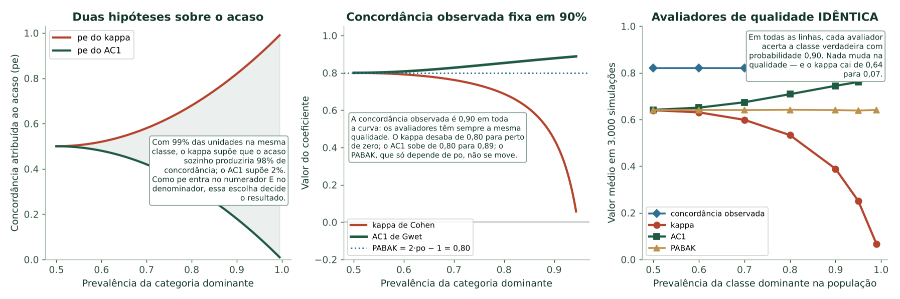
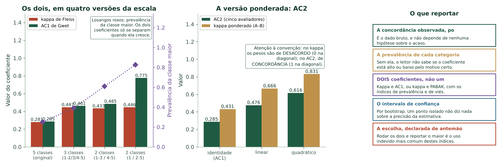

Coeficiente AC1 de Gwet
Substitui a hipótese do kappa sobre o acaso por outra, em que a concordância esperada diminui quando uma categoria domina.
Comece por aqui
O kappa de Cohen e o kappa de Fleiss colapsam quando uma categoria domina: a concordância observada pode ser de 90% e o coeficiente ficar perto de zero. Gwet (2008) argumentou que o problema está na hipótese que esses índices fazem sobre o acaso, e propôs outra — da qual resulta o coeficiente AC1.
O kappa supõe que um avaliador em dúvida sorteia a categoria com as probabilidades das próprias marginais. Gwet objeta: quem está em dúvida escolhe entre as categorias plausíveis, e isso é mais provável quando as categorias são igualmente prováveis, não quando uma domina. Daí um \(p_e\) que diminui com o desequilíbrio, em vez de crescer.
O que é o AC1
A estrutura é a mesma de todos os coeficientes desta família: \((p_o-p_e)/(1-p_e)\). O que muda é exclusivamente \(p_e\). Enquanto o kappa usa \(\sum_j p_j^2\), que cresce com o desequilíbrio, o AC1 usa \(\frac{1}{k-1}\sum_j p_j(1-p_j)\), que é máximo quando as categorias são equiprováveis e tende a zero quando uma delas domina.

Na última tabela desta ficha, os avaliadores têm exatamente a mesma qualidade em todas as linhas: cada um acerta a classe verdadeira com probabilidade 0,90. A concordância observada é, por consequência, constante em 0,82 — ela tem de ser, porque \(0{,}9^2+0{,}1^2=0{,}82\). E, no entanto, o kappa cai de 0,64 para 0,07 à medida que a prevalência sobe. Nada mudou nos avaliadores; mudou a população em que eles foram aplicados.
Pressupostos e como verificá-los
| Pressuposto | Por que importa | Como verificar |
|---|---|---|
| Mesmo número de avaliadores por unidade | A fórmula de po é a de Fleiss. | Conte as avaliações; irrCAC aceita dados faltantes. |
| Categorias exclusivas e exaustivas | Cada avaliação cai em exatamente uma. | Soma das contagens. |
| Unidades independentes | O erro-padrão pressupõe isso. | Delineamento. |
| Avaliações independentes entre si | Avaliadores que se consultam inflam po. | Protocolo. |
| A hipótese sobre o acaso, aceita explicitamente | É o que distingue AC1 de kappa. | Não é verificável nos dados: é uma escolha a declarar. |
| Pesos de CONCORDÂNCIA no AC2 | A convenção é oposta à do kappa ponderado. | Confira que a diagonal vale 1. |
| k conhecido e fixo | pe depende do número de categorias possíveis. | Inclua categorias nunca usadas, se existirem na escala. |
É um coeficiente com outra hipótese sobre o acaso, e as duas hipóteses só divergem quando há desequilíbrio. Nos dados originais desta ficha, com as cinco classes razoavelmente equilibradas, \(p_e\) vale 0,2042 para o kappa e 0,1989 para o AC1, e os coeficientes ficam em 0,2806 e 0,2853 — praticamente idênticos. Quem esperar que o AC1 "resolva" uma concordância ruim vai se decepcionar: ele só muda o resultado onde o paradoxo existe.
Formulação e cálculo
A concordância observada \(p_o\) é exatamente a mesma do kappa de Fleiss. Toda a diferença está em \(p_e\). Para comparação:
Em que:
- \(\pi_j\)
- prevalência global da categoria \(j\)
- \(k\)
- número de categorias da escala
- \(n_{ij}\)
- avaliadores que puseram a unidade \(i\) na categoria \(j\)
- \(m\)
- avaliadores por unidade
As duas hipóteses, lado a lado
| Prevalência da classe 1 | pe do kappa | pe do AC1 |
|---|---|---|
| 0,50 | 0,5000 | 0,5000 |
| 0,60 | 0,5200 | 0,4800 |
| 0,70 | 0,5800 | 0,4200 |
| 0,80 | 0,6800 | 0,3200 |
| 0,90 | 0,8200 | 0,1800 |
| 0,95 | 0,9050 | 0,0950 |
| 0,99 | 0,9802 | 0,0198 |
Com categorias equiprováveis os dois coincidem; a partir daí seguem em direções opostas. Nenhuma das duas hipóteses é verificável nos dados — o que teria acontecido se o avaliador estivesse chutando não é observável —, e por isso a escolha é substantiva e tem de ser declarada.
Exemplo numérico, passo a passo
| Tabela | po | pe kappa | Kappa | pe AC1 | AC1 |
|---|---|---|---|---|---|
| Equilibrada [[45,5],[5,45]] | 0,9000 | 0,5000 | 0,8000 | 0,5000 | 0,8000 |
| Moderada [[60,5],[5,30]] | 0,9000 | 0,5450 | 0,7802 | 0,4550 | 0,8165 |
| Desequilibrada [[80,5],[5,10]] | 0,9000 | 0,7450 | 0,6078 | 0,2550 | 0,8658 |
| Muito desequilibrada [[85,5],[5,5]] | 0,9000 | 0,8200 | 0,4444 | 0,1800 | 0,8780 |
| Extrema [[92,4],[4,0]] | 0,9200 | 0,9232 | −0,0417 | 0,0768 | 0,9133 |
Na tabela extrema, 92 das 100 unidades foram classificadas na mesma categoria pelos dois avaliadores, e nenhuma na segunda categoria por ambos. A concordância observada é 0,92. Para o kappa:
O kappa é NEGATIVO com 92% de concordância, porque o acaso sozinho produziria 92,3%. Para o AC1, com \(\bar\pi_1=0{,}96\):
Os dois números descrevem a mesma tabela. Qual deles é "o certo" depende de quanto se acredita que avaliadores em dúvida sorteiam com probabilidade 0,96 a categoria dominante.
Propriedades
- Usa exatamente a mesma concordância observada \(p_o\) do kappa de Fleiss.
- \(p_e^{(\gamma)}\) é máximo quando as categorias são equiprováveis e tende a zero quando uma domina — o oposto do kappa.
- Com categorias equiprováveis, AC1 e kappa coincidem exatamente.
- Está sempre entre o kappa e o PABAK quando há desequilíbrio.
- Admite versão ponderada, o AC2, com pesos de CONCORDÂNCIA (1 na diagonal).
- Tem erro-padrão em forma fechada, implementado em
irrCAC, e aceita dados faltantes. - Não resolve o paradoxo do viés, apenas o da prevalência: marginais discrepantes continuam a afetá-lo.
Como interpretar os resultados
| Elemento | O que informa | Cuidado |
|---|---|---|
| coeff.val | A estimativa de AC1. | Reporte junto com o kappa. |
| coeff.se e conf.int | Erro-padrão e intervalo. | Em irrCAC vêm em forma fechada. |
| pa | A concordância bruta. | É igual para os dois coeficientes. |
| pe | A concordância esperada. | É aqui que está toda a diferença. |
| Prevalência de cada classe | Se há desequilíbrio. | Sem ela, não se sabe se o paradoxo está em jogo. |
| Diferença AC1 − kappa | O tamanho do efeito do paradoxo. | Perto de zero, a escolha é indiferente. |
Reportar dois coeficientes, nunca um. O par kappa e AC1 delimita o intervalo de leituras defensáveis, e a prevalência da classe maior diz ao leitor se eles deveriam ou não coincidir. O que não se pode fazer é rodar os dois e escolher o que der o número mais favorável — a escolha pertence ao protocolo, como tudo o mais nesta família de coeficientes.
Como executar no R e em Python
Onde executar o código em Python
Não é preciso instalar nada: o Google Colab é um computador na nuvem, gratuito, que executa Python pelo navegador e já traz as bibliotecas usadas aqui (numpy, scipy e matplotlib).
O pacote de referência é o irrCAC, escrito pelo próprio Gwet, com gwet.ac1.raw() para dados brutos e gwet.ac1.table() para tabelas de contingência. Ele devolve a estimativa, o erro-padrão e o intervalo em forma fechada, aceita dados faltantes e oferece os esquemas de peso para o AC2 pelo argumento weights. O mesmo pacote traz fleiss.kappa.raw() e krippen.alpha.raw(), o que facilita a comparação lado a lado que esta ficha recomenda.
library(irrCAC)
gwet.ac1.raw(as.data.frame(sev)) # AC1
fleiss.kappa.raw(as.data.frame(sev)) # para comparar
gwet.ac1.raw(as.data.frame(sev), weights = "ordinal") # AC2 ponderado
Exemplo de aplicação
Contexto dos dados
Os dados são fictícios e foram criados pelo autor: 40 folhas de cafeeiro avaliadas quanto à severidade de ferrugem por cinco avaliadores (A a E), em escala ordinal de 1 (ausente) a 5 (muito alta). O mesmo conjunto atravessa as seis fichas de concordância, o que permite ver como cada coeficiente responde à mesma estrutura de desacordo. Dois dos avaliadores foram construídos com defeitos distintos: o C classifica sistematicamente cerca de uma classe acima dos demais, e o E é o mais errático sem ser o mais severo. Como as cinco classes estão razoavelmente equilibradas no conjunto original, a ficha também examina versões colapsadas da escala, em que o desequilíbrio aparece e os dois coeficientes se separam.
Código em R
# Coeficiente AC1 de Gwet: exemplo completo ----
# Pacotes: irrCAC (do próprio Gwet), irr, DescTools
# install.packages(c("irrCAC", "irr"))
sev <- matrix(c(
3,3,4,3,4, 5,4,4,4,5, 4,4,5,3,5, 5,5,5,4,5, 5,5,5,4,3,
1,2,2,1,1, 2,2,3,2,4, 1,2,1,1,1, 3,3,4,3,4, 3,4,5,4,2,
4,3,4,3,4, 3,4,4,3,3, 1,1,1,1,1, 3,3,5,3,3, 2,3,2,2,1,
5,5,5,5,4, 5,5,4,3,5, 4,5,5,4,4, 2,2,5,2,2, 3,4,5,4,3,
4,4,4,4,1, 1,2,3,1,3, 3,3,3,3,3, 2,3,5,2,3, 2,1,2,2,2,
2,1,3,2,3, 3,3,4,3,1, 2,1,1,1,5, 3,2,4,5,4, 1,1,1,1,2,
4,5,5,4,4, 2,2,4,2,1, 1,1,4,1,3, 1,1,2,1,1, 3,3,3,2,3,
3,3,3,3,3, 3,5,4,3,2, 2,2,4,2,1, 4,2,5,4,4, 5,5,5,5,2),
ncol = 5, byrow = TRUE,
dimnames = list(NULL, c("A","B","C","D","E")))
library(irrCAC)
df <- as.data.frame(sev)
gwet.ac1.raw(df) # AC1, erro-padrão e IC
fleiss.kappa.raw(df) # kappa de Fleiss, para comparar
krippen.alpha.raw(df) # alfa de Krippendorff
pa.coeff.raw(df) # concordância bruta
# Versão PONDERADA (AC2), para escala ordinal
gwet.ac1.raw(df, weights = "ordinal")
gwet.ac1.raw(df, weights = "linear")
gwet.ac1.raw(df, weights = "quadratic")
# Atenção: em irrCAC os pesos são de CONCORDÂNCIA (1 na diagonal),
# ao contrário de irr::kappa2(), em que são de DESACORDO.
# A conta à mão
n <- nrow(sev); m <- ncol(sev); k <- 5
N <- t(apply(sev, 1, function(r) table(factor(r, levels = 1:k))))
pi_ <- colSums(N)/(n*m)
po <- mean((rowSums(N^2) - m)/(m*(m-1)))
pe_gwet <- sum(pi_*(1 - pi_))/(k - 1)
pe_fleiss <- sum(pi_^2)
c(po = po,
AC1 = (po - pe_gwet)/(1 - pe_gwet),
Fleiss = (po - pe_fleiss)/(1 - pe_fleiss))
# O paradoxo da prevalência, lado a lado
tabelas <- list(equilibrada = matrix(c(45,5,5,45), 2, byrow = TRUE),
desequil = matrix(c(80,5,5,10), 2, byrow = TRUE),
extrema = matrix(c(92,4,4,0), 2, byrow = TRUE))
t(sapply(tabelas, function(T) {
P <- prop.table(T); po <- sum(diag(P))
pe_k <- sum(rowSums(P)*colSums(P))
pbar <- (rowSums(P) + colSums(P))/2
pe_g <- 2*pbar[1]*pbar[2]
c(po = po, pe_kappa = pe_k, kappa = (po - pe_k)/(1 - pe_k),
pe_ac1 = pe_g, ac1 = (po - pe_g)/(1 - pe_g), pabak = 2*po - 1)
}))
# O mesmo cálculo em escalas colapsadas
s1 <- ifelse(sev == 1, 1, 2) # sem sintoma x com sintoma
df1 <- as.data.frame(s1)
gwet.ac1.raw(df1)$est
fleiss.kappa.raw(df1)$est
# Gráficos
p <- seq(0.5, 0.99, length.out = 200)
plot(p, p^2 + (1-p)^2, type = "l", col = "firebrick", lwd = 2, ylim = c(0, 1),
xlab = "Prevalência da categoria dominante", ylab = "pe")
lines(p, 2*p*(1-p), col = "darkgreen", lwd = 2)
legend("left", c("pe do kappa", "pe do AC1"),
col = c("firebrick", "darkgreen"), lwd = 2, bty = "n")
A mesma análise em Python, com os resultados
Cole o código em um notebook do Google Colab ↗ e execute com Shift+Enter. Os valores abaixo são a saída desse código.
# Bibliotecas: numpy e scipy (ambas já instaladas no Google Colab)
import numpy as np
from scipy import stats
# ===================================================================
# Dados fictícios, criados pelo autor, compartilhados pelas fichas de
# concordância: 40 folhas de cafeeiro avaliadas quanto à severidade de
# ferrugem por cinco avaliadores, em escala de 1 (ausente) a 5 (muito alta).
# ===================================================================
SEV = np.array([
[3,3,4,3,4],[5,4,4,4,5],[4,4,5,3,5],[5,5,5,4,5],[5,5,5,4,3],
[1,2,2,1,1],[2,2,3,2,4],[1,2,1,1,1],[3,3,4,3,4],[3,4,5,4,2],
[4,3,4,3,4],[3,4,4,3,3],[1,1,1,1,1],[3,3,5,3,3],[2,3,2,2,1],
[5,5,5,5,4],[5,5,4,3,5],[4,5,5,4,4],[2,2,5,2,2],[3,4,5,4,3],
[4,4,4,4,1],[1,2,3,1,3],[3,3,3,3,3],[2,3,5,2,3],[2,1,2,2,2],
[2,1,3,2,3],[3,3,4,3,1],[2,1,1,1,5],[3,2,4,5,4],[1,1,1,1,2],
[4,5,5,4,4],[2,2,4,2,1],[1,1,4,1,3],[1,1,2,1,1],[3,3,3,2,3],
[3,3,3,3,3],[3,5,4,3,2],[2,2,4,2,1],[4,2,5,4,4],[5,5,5,5,2]])
AVAL = ["A", "B", "C", "D", "E"]
def contagens(X, k):
n, m = X.shape; N = np.zeros((n, k))
for i in range(n):
for v in X[i]: N[i, v-1] += 1
return N
def po_bar(N, m):
"""Concordância observada média: a mesma dos dois coeficientes."""
return (((N**2).sum(1) - m)/(m*(m-1))).mean()
def ac1(X, k, w=None):
"""AC1 de Gwet (nominal) ou AC2 (com pesos de CONCORDÂNCIA)."""
n, m = X.shape; N = contagens(X, k)
if w is None: w = np.eye(k) # peso de CONCORDÂNCIA
Tw = w.sum()
po = np.mean([ (N[i] @ w @ N[i] - (np.diag(w) * N[i]).sum())
/ (m*(m-1)) for i in range(n)])
pi = N.sum(0)/(n*m) # prevalência de cada classe
pe = Tw/(k*(k-1)) * sum(pi[j]*(1-pi[j]) for j in range(k)) if False else \
(Tw/(k*(k-1))) * sum(pi[j]*(1-pi[j]) for j in range(k))
return (po - pe)/(1 - pe), po, pe, pi
def fleiss(X, k):
n, m = X.shape; N = contagens(X, k)
pj = N.sum(0)/(n*m); Pb = po_bar(N, m); Pe = (pj**2).sum()
return (Pb-Pe)/(1-Pe), Pb, Pe
def kappa2(O):
O = np.asarray(O, float); P = O/O.sum()
po = np.trace(P); pe = (P.sum(1)*P.sum(0)).sum()
return (po-pe)/(1-pe), po, pe
def ac1_2(O):
"""AC1 para a tabela 2x2 de dois avaliadores."""
O = np.asarray(O, float); k = 2; P = O/O.sum()
po = np.trace(P)
pi = (P.sum(1) + P.sum(0))/2
pe = 2*pi[0]*pi[1] # = (1/(k-1)) * soma pi(1-pi) com k = 2
return (po-pe)/(1-pe), po, pe, pi
# ===================================================================
# PARTE 1 - o problema que o AC1 resolve
# ===================================================================
print("O paradoxo do kappa, revisitado")
print("Quando quase todas as unidades caem na mesma categoria, a concordância")
print("esperada por acaso do kappa fica enorme, e o coeficiente despenca mesmo")
print("com 90% de concordância observada.")
print(f"\n{'tabela':<22}{'po':>9}{'pe kappa':>11}{'kappa':>9}"
f"{'pe AC1':>10}{'AC1':>9}")
exemplos = [("equilibrada", np.array([[45.,5.],[5.,45.]])),
("moderada", np.array([[60.,5.],[5.,30.]])),
("desequilibrada", np.array([[80.,5.],[5.,10.]])),
("muito desequilibrada", np.array([[85.,5.],[5.,5.]])),
("extrema", np.array([[92.,4.],[4.,0.]]))]
for nome, T in exemplos:
Kx, pox, pex = kappa2(T); Ax, poa, pea, _ = ac1_2(T)
print(f"{nome:<22}{pox:>9.4f}{pex:>11.4f}{Kx:>9.4f}{pea:>10.4f}{Ax:>9.4f}")
print("\nA concordância observada é 0,90 nas cinco primeiras linhas e 0,92 na")
print("última. O kappa varia de 0,80 a −0,04; o AC1 fica entre 0,80 e 0,92.")
print("A diferença está inteiramente no pe: o do kappa cresce com o")
print("desequilíbrio, o do AC1 DIMINUI - e é essa a tese de Gwet.")
print("\nPor que o pe do AC1 se comporta assim")
print("O kappa supõe que, ao não saber, o avaliador sorteia a categoria com")
print("as probabilidades das próprias marginais dele. Gwet argumenta que isso")
print("é implausível: um avaliador que não sabe tende a escolher ao acaso")
print("ENTRE AS CATEGORIAS PLAUSÍVEIS, e isso é mais provável quando as")
print("categorias são igualmente prováveis, não quando uma domina.")
print(f"\n{'prevalência da classe 1':>26}{'pe do kappa':>14}{'pe do AC1':>12}")
for p1 in [0.50, 0.60, 0.70, 0.80, 0.90, 0.95, 0.99]:
pek = p1**2 + (1-p1)**2
pea = 2*p1*(1-p1)
print(f"{p1:>26.2f}{pek:>14.4f}{pea:>12.4f}")
print("Com 99% das unidades na classe 1, o kappa supõe que o acaso sozinho")
print("produziria 98% de concordância; o AC1 supõe 2%. A verdade costuma")
print("estar entre as duas, mas a do kappa é claramente a mais extrema.")
# ===================================================================
# PARTE 2 - AC1 nos dados das fichas de concordância
# ===================================================================
print("\n" + "=" * 70)
n, m = SEV.shape; k = 5
print(f"As mesmas {n} folhas e {m} avaliadores das fichas anteriores")
A, poA, peA, pi = ac1(SEV, k)
Kf, PbF, PeF = fleiss(SEV, k)
print(f"\nConcordância observada (idêntica nos dois) po = {poA:.4f}")
print(f"Concordância esperada do kappa de Fleiss pe = {PeF:.4f}")
print(f"Concordância esperada do AC1 de Gwet pe = {peA:.4f}")
print(f"\n kappa de Fleiss = {Kf:.4f}")
print(f" AC1 de Gwet = {A:.4f}")
print(f" diferença = {A-Kf:+.4f}")
print("\nAs cinco classes têm prevalências próximas:")
print(" " + " ".join(f"classe {j+1}: {pi[j]:.3f}" for j in range(k)))
print("Sem uma classe dominante, o pe do AC1 (0,1989) e o do kappa (0,2042)")
print("quase coincidem, e os dois coeficientes também. É o resultado")
print("esperado: o AC1 não é 'um kappa maior', é um kappa com outra hipótese")
print("sobre o acaso, e as duas hipóteses só divergem no desequilíbrio.")
print("\nAgora o mesmo cálculo depois de colapsar a escala em 'sem sintoma'")
print("(classe 1) contra 'com sintoma' (classes 2 a 5), que é fortemente")
print("desequilibrada:")
S2 = np.where(SEV == 1, 1, 2)
A2, poA2, peA2, pi2 = ac1(S2, 2)
K2, Pb2, Pe2 = fleiss(S2, 2)
print(f" prevalências: sem sintoma {pi2[0]:.3f}, com sintoma {pi2[1]:.3f}")
print(f" concordância observada = {poA2:.4f}")
print(f" pe do kappa = {Pe2:.4f} -> kappa de Fleiss = {K2:.4f}")
print(f" pe do AC1 = {peA2:.4f} -> AC1 de Gwet = {A2:.4f}")
print(f" o AC1 fica {A2-K2:+.4f} acima do kappa")
print("Com 82,5% das avaliações em uma só classe, os dois se separam, e a")
print("separação cresce com o desequilíbrio.")
# ===================================================================
# PARTE 3 - AC2: a versão ponderada, para escalas ordinais
# ===================================================================
print("\n" + "=" * 70)
print("AC2: a versão com pesos, análoga ao kappa ponderado")
i, j = np.arange(k)[:, None], np.arange(k)[None, :]
pesos_conc = {"identidade (AC1)": np.eye(k),
"linear": 1 - np.abs(i-j)/(k-1),
"quadrático": 1 - (i-j)**2/(k-1)**2}
print(f"\n{'pesos':<22}{'po':>10}{'pe':>10}{'AC2':>10}")
for nome, w in pesos_conc.items():
Ax, pox, pex, _ = ac1(SEV, k, w)
print(f"{nome:<22}{pox:>10.4f}{pex:>10.4f}{Ax:>10.4f}")
print("\nAtenção à convenção: no kappa ponderado os pesos são de DESACORDO")
print("(0 na diagonal); no AC2 são de CONCORDÂNCIA (1 na diagonal). São o")
print("complemento um do outro, e trocá-los inverte o resultado.")
# ===================================================================
# PARTE 4 - os dois coeficientes sob variação de prevalência
# ===================================================================
print("\n" + "=" * 70)
print("Simulação: dois avaliadores com a MESMA qualidade - cada um acerta a")
print("classe verdadeira com probabilidade 0,90 e erra para a outra classe")
print("com 0,10 - aplicados a populações de prevalência crescente.")
print("A QUALIDADE DOS AVALIADORES NÃO MUDA entre as linhas.")
rng = np.random.default_rng(9)
print(f"\n{'prevalência':>12}{'po':>9}{'kappa':>10}{'AC1':>9}{'PABAK':>9}")
for prev in [0.50, 0.60, 0.70, 0.80, 0.90, 0.95, 0.99]:
ks, as_, pb, ps = [], [], [], []
for _ in range(3000):
verdade = (rng.random(300) < prev).astype(int)
r1 = np.where(rng.random(300) < 0.90, verdade, 1-verdade)
r2 = np.where(rng.random(300) < 0.90, verdade, 1-verdade)
T = np.zeros((2,2))
for a_, b_ in zip(r1, r2): T[a_, b_] += 1
if T.sum(0).min() == 0 or T.sum(1).min() == 0: continue
Kx, pox, _ = kappa2(T); Ax, _, _, _ = ac1_2(T)
ks.append(Kx); as_.append(Ax); pb.append(2*pox-1); ps.append(pox)
print(f"{prev:>12.2f}{np.mean(ps):>9.4f}{np.mean(ks):>10.4f}"
f"{np.mean(as_):>9.4f}{np.mean(pb):>9.4f}")
print("\nA simulação isola o fenômeno de forma limpa. A concordância observada")
print("é CONSTANTE em 0,82 nas sete linhas - e tem de ser, porque po = 0,9² +")
print("0,1² = 0,82 qualquer que seja a prevalência, dada a qualidade fixa dos")
print("avaliadores. O PABAK, que só depende de po, também fica constante em")
print("0,64, como deve.")
print("O kappa, porém, cai de 0,64 para 0,07 ao longo da tabela, sem que nada")
print("na qualidade dos avaliadores tenha mudado: é o paradoxo de prevalência")
print("em estado puro. O AC1 vai na direção oposta, de 0,64 para 0,78, porque")
print("o seu pe encolhe quando uma classe domina.")
print("Nenhum dos três é 'o certo'. O kappa responde: quanto da concordância")
print("sobra depois de descontar o que avaliadores com estas marginais")
print("produziriam sorteando? O AC1 responde: quanto sobra depois de descontar")
print("o que produziriam sorteando entre as classes plausíveis? O PABAK nem")
print("desconta. São três perguntas, e a escolha precisa ser declarada.")
# ===================================================================
# PARTE 5 - o que reportar
# ===================================================================
print("\n" + "=" * 70)
print("A recomendação prática: reportar po, a prevalência e DOIS coeficientes")
print("Para os dados desta ficha, em três versões da escala:")
print(f"\n{'escala':<30}{'po':>9}{'classe maior':>14}{'kappa':>9}{'AC1':>9}")
for rot, Z, kk in [("5 classes (original)", SEV, 5),
("3 classes (1-2 / 3 / 4-5)",
np.where(SEV <= 2, 1, np.where(SEV == 3, 2, 3)), 3),
("2 classes (1 / 2-5)", np.where(SEV == 1, 1, 2), 2),
("2 classes (1-3 / 4-5)", np.where(SEV <= 3, 1, 2), 2)]:
Ax, pox, pex, pix = ac1(Z, kk); Kx, _, _ = fleiss(Z, kk)
print(f"{rot:<30}{pox:>9.4f}{pix.max():>14.3f}{Kx:>9.4f}{Ax:>9.4f}")
print("\nQuanto mais desequilibrada a escala, maior o afastamento entre os")
print("dois. Reportar apenas um deles, sem a prevalência ao lado, deixa o")
print("leitor sem como julgar se o número é alto ou baixo pelo motivo certo.")
Resultados da execução
O paradoxo do kappa, revisitado
Quando quase todas as unidades caem na mesma categoria, a concordância
esperada por acaso do kappa fica enorme, e o coeficiente despenca mesmo
com 90% de concordância observada.
tabela po pe kappa kappa pe AC1 AC1
equilibrada 0.9000 0.5000 0.8000 0.5000 0.8000
moderada 0.9000 0.5450 0.7802 0.4550 0.8165
desequilibrada 0.9000 0.7450 0.6078 0.2550 0.8658
muito desequilibrada 0.9000 0.8200 0.4444 0.1800 0.8780
extrema 0.9200 0.9232 -0.0417 0.0768 0.9133
A concordância observada é 0,90 nas cinco primeiras linhas e 0,92 na
última. O kappa varia de 0,80 a −0,04; o AC1 fica entre 0,80 e 0,92.
A diferença está inteiramente no pe: o do kappa cresce com o
desequilíbrio, o do AC1 DIMINUI - e é essa a tese de Gwet.
Por que o pe do AC1 se comporta assim
O kappa supõe que, ao não saber, o avaliador sorteia a categoria com
as probabilidades das próprias marginais dele. Gwet argumenta que isso
é implausível: um avaliador que não sabe tende a escolher ao acaso
ENTRE AS CATEGORIAS PLAUSÍVEIS, e isso é mais provável quando as
categorias são igualmente prováveis, não quando uma domina.
prevalência da classe 1 pe do kappa pe do AC1
0.50 0.5000 0.5000
0.60 0.5200 0.4800
0.70 0.5800 0.4200
0.80 0.6800 0.3200
0.90 0.8200 0.1800
0.95 0.9050 0.0950
0.99 0.9802 0.0198
Com 99% das unidades na classe 1, o kappa supõe que o acaso sozinho
produziria 98% de concordância; o AC1 supõe 2%. A verdade costuma
estar entre as duas, mas a do kappa é claramente a mais extrema.
======================================================================
As mesmas 40 folhas e 5 avaliadores das fichas anteriores
Concordância observada (idêntica nos dois) po = 0.4275
Concordância esperada do kappa de Fleiss pe = 0.2042
Concordância esperada do AC1 de Gwet pe = 0.1989
kappa de Fleiss = 0.2806
AC1 de Gwet = 0.2853
diferença = +0.0047
As cinco classes têm prevalências próximas:
classe 1: 0.175 classe 2: 0.185 classe 3: 0.250 classe 4: 0.215 classe 5: 0.175
Sem uma classe dominante, o pe do AC1 (0,1989) e o do kappa (0,2042)
quase coincidem, e os dois coeficientes também. É o resultado
esperado: o AC1 não é 'um kappa maior', é um kappa com outra hipótese
sobre o acaso, e as duas hipóteses só divergem no desequilíbrio.
Agora o mesmo cálculo depois de colapsar a escala em 'sem sintoma'
(classe 1) contra 'com sintoma' (classes 2 a 5), que é fortemente
desequilibrada:
prevalências: sem sintoma 0.175, com sintoma 0.825
concordância observada = 0.8400
pe do kappa = 0.7112 -> kappa de Fleiss = 0.4459
pe do AC1 = 0.2888 -> AC1 de Gwet = 0.7750
o AC1 fica +0.3292 acima do kappa
Com 82,5% das avaliações em uma só classe, os dois se separam, e a
separação cresce com o desequilíbrio.
======================================================================
AC2: a versão com pesos, análoga ao kappa ponderado
pesos po pe AC2
identidade (AC1) 0.4275 0.1989 0.2853
linear 0.7887 0.5968 0.4760
quadrático 0.9025 0.7461 0.6160
Atenção à convenção: no kappa ponderado os pesos são de DESACORDO
(0 na diagonal); no AC2 são de CONCORDÂNCIA (1 na diagonal). São o
complemento um do outro, e trocá-los inverte o resultado.
======================================================================
Simulação: dois avaliadores com a MESMA qualidade - cada um acerta a
classe verdadeira com probabilidade 0,90 e erra para a outra classe
com 0,10 - aplicados a populações de prevalência crescente.
A QUALIDADE DOS AVALIADORES NÃO MUDA entre as linhas.
prevalência po kappa AC1 PABAK
0.50 0.8203 0.6397 0.6415 0.6405
0.60 0.8205 0.6307 0.6508 0.6410
0.70 0.8202 0.5986 0.6740 0.6405
0.80 0.8208 0.5331 0.7086 0.6417
0.90 0.8202 0.3887 0.7445 0.6405
0.95 0.8193 0.2510 0.7610 0.6386
0.99 0.8205 0.0662 0.7772 0.6411
A simulação isola o fenômeno de forma limpa. A concordância observada
é CONSTANTE em 0,82 nas sete linhas - e tem de ser, porque po = 0,9² +
0,1² = 0,82 qualquer que seja a prevalência, dada a qualidade fixa dos
avaliadores. O PABAK, que só depende de po, também fica constante em
0,64, como deve.
O kappa, porém, cai de 0,64 para 0,07 ao longo da tabela, sem que nada
na qualidade dos avaliadores tenha mudado: é o paradoxo de prevalência
em estado puro. O AC1 vai na direção oposta, de 0,64 para 0,78, porque
o seu pe encolhe quando uma classe domina.
Nenhum dos três é 'o certo'. O kappa responde: quanto da concordância
sobra depois de descontar o que avaliadores com estas marginais
produziriam sorteando? O AC1 responde: quanto sobra depois de descontar
o que produziriam sorteando entre as classes plausíveis? O PABAK nem
desconta. São três perguntas, e a escolha precisa ser declarada.
======================================================================
A recomendação prática: reportar po, a prevalência e DOIS coeficientes
Para os dados desta ficha, em três versões da escala:
escala po classe maior kappa AC1
5 classes (original) 0.4275 0.250 0.2806 0.2853
3 classes (1-2 / 3 / 4-5) 0.6375 0.390 0.4472 0.4606
2 classes (1 / 2-5) 0.8400 0.825 0.4459 0.7750
2 classes (1-3 / 4-5) 0.7300 0.610 0.4325 0.4849
Quanto mais desequilibrada a escala, maior o afastamento entre os
dois. Reportar apenas um deles, sem a prevalência ao lado, deixa o
leitor sem como julgar se o número é alto ou baixo pelo motivo certo.
| Elemento | Valor |
|---|---|
| Concordância observada (idêntica nos dois) | 0,4275 |
| pe do kappa de Fleiss | 0,2042 |
| pe do AC1 de Gwet | 0,1989 |
| Kappa de Fleiss | 0,2806 |
| AC1 de Gwet | 0,2853 |
| Diferença | +0,0047 |
| Prevalências das cinco classes | 0,175 · 0,185 · 0,250 · 0,215 · 0,175 |
| Escala | po | Classe maior | Kappa | AC1 | Diferença |
|---|---|---|---|---|---|
| 5 classes (original) | 0,4275 | 0,250 | 0,2806 | 0,2853 | +0,005 |
| 3 classes (1-2 / 3 / 4-5) | 0,6375 | 0,390 | 0,4472 | 0,4606 | +0,013 |
| 2 classes (1-3 / 4-5) | 0,7300 | 0,610 | 0,4325 | 0,4849 | +0,052 |
| 2 classes (1 / 2-5) | 0,8400 | 0,825 | 0,4459 | 0,7750 | +0,329 |
| Pesos (de concordância) | po | pe | AC2 |
|---|---|---|---|
| Identidade (= AC1) | 0,4275 | 0,1989 | 0,2853 |
| Linear | 0,7887 | 0,5968 | 0,4760 |
| Quadrático | 0,9025 | 0,7461 | 0,6160 |
| Prevalência | po | Kappa | AC1 | PABAK |
|---|---|---|---|---|
| 0,50 | 0,8203 | 0,6397 | 0,6415 | 0,6405 |
| 0,60 | 0,8205 | 0,6307 | 0,6508 | 0,6410 |
| 0,70 | 0,8202 | 0,5986 | 0,6740 | 0,6405 |
| 0,80 | 0,8208 | 0,5331 | 0,7086 | 0,6417 |
| 0,90 | 0,8202 | 0,3887 | 0,7445 | 0,6405 |
| 0,95 | 0,8193 | 0,2510 | 0,7610 | 0,6386 |
| 0,99 | 0,8205 | 0,0662 | 0,7772 | 0,6411 |
Leitura dos dados originais: com as cinco classes razoavelmente equilibradas — a mais frequente responde por 25% das avaliações — as duas hipóteses sobre o acaso quase coincidem: \(p_e\) vale 0,2042 e 0,1989. Os coeficientes ficam em 0,2806 e 0,2853, e a escolha entre eles é indiferente. Esse é o resultado esperado, e vale registrá-lo: o AC1 não é um coeficiente sistematicamente mais generoso, é um coeficiente com outra hipótese, e as duas só divergem onde há desequilíbrio.
Leitura das escalas colapsadas: ao reduzir a escala a "sem sintoma" contra "com sintoma", 82,5% das avaliações passam a cair em uma única classe. A concordância observada sobe para 0,84 — e os dois coeficientes se separam de forma drástica: 0,446 contra 0,775, uma diferença de 0,329. É o mesmo conjunto de avaliadores, o mesmo material, e apenas uma maneira diferente de agrupar as classes.
A simulação: é o argumento central da ficha, e vale lê-lo com cuidado porque ele isola o fenômeno. Em todas as sete linhas, cada avaliador acerta a classe verdadeira com probabilidade 0,90 — a qualidade é constante por construção. A concordância observada é, portanto, constante em 0,82, e o PABAK, que só depende dela, fica constante em 0,64. O kappa, porém, cai de 0,64 para 0,07: ele reage a uma mudança na população, não nos avaliadores. O AC1 vai na direção oposta, de 0,64 para 0,78.
Nenhum dos três é "o certo", e é importante resistir à tentação de declarar um vencedor. Eles respondem a perguntas diferentes. O kappa pergunta: quanto da concordância sobra depois de descontar o que avaliadores com estas marginais produziriam sorteando? O AC1 pergunta: quanto sobra depois de descontar o que produziriam sorteando entre as categorias plausíveis? O PABAK não desconta nada. Em um cenário de prevalência extrema, o desconto do kappa é implausivelmente grande e o do AC1 é implausivelmente pequeno — e a verdade, se é que existe uma, está entre os dois.
Sobre o AC2: a versão ponderada segue a mesma lógica do kappa ponderado, com uma diferença de convenção que causa erros frequentes: no AC2 os pesos são de concordância, valendo 1 na diagonal e 0 no desacordo máximo, ao contrário do kappa ponderado, em que valem 0 na diagonal. Trocar uma convenção pela outra produz um resultado sem sentido, e é um erro comum em implementações próprias.
Erros comuns
| Erro | Como evitar |
|---|---|
| Rodar kappa e AC1 e reportar o maior | Declare a escolha no protocolo, ou reporte os dois. |
| Tratar o AC1 como "o kappa corrigido" | É outra hipótese sobre o acaso, não uma correção. |
| Esperar que o AC1 salve uma concordância ruim | Com classes equilibradas, ele dá quase o mesmo que o kappa. |
| Trocar pesos de concordância por pesos de desacordo | No AC2 a diagonal vale 1; no kappa ponderado, 0. |
| Reportar o AC1 sem as prevalências | Sem elas, não se sabe se o paradoxo está em jogo. |
| Supor que o AC1 resolve o paradoxo do VIÉS | Ele trata apenas o da prevalência. |
| Omitir k ao calcular pe | pe do AC1 depende do número de categorias da escala. |
| Colapsar categorias para melhorar o coeficiente | Decida a escala antes. |
| Comparar um AC1 com um kappa de outro estudo | São escalas diferentes. |
| Usar o AC1 como se fosse acurácia | Concordância não é acerto. |
Alternativas e fluxo de trabalho
| Procedimento | Quando preferir |
|---|---|
| Kappa de Fleiss | Categorias equilibradas; é a referência consolidada. |
| Kappa de Cohen | Dois avaliadores, escala nominal. |
| PABAK | Quando se quer um índice que não desconte nada pelas marginais. |
| AC2 de Gwet | Escala ordinal com desequilíbrio. |
| Alfa de Krippendorff | Dados faltantes, número variável de avaliadores, qualquer escala. |
| Pi de Scott | Dois avaliadores: usa as marginais médias, como o AC1. |
| Correlação intraclasse | Resposta contínua. |
| Modelos de classe latente | Quando se quer estimar sensibilidade e especificidade de cada avaliador. |
| Reportar po com as prevalências | Sempre: é o dado bruto, e não depende de hipótese alguma. |
- Examine as prevalências das categorias ANTES de escolher o coeficiente.
- Se houver desequilíbrio forte, antecipe que kappa e AC1 vão divergir.
- Declare no protocolo qual coeficiente será o primário, e por quê.
- Calcule a concordância observada, que é comum a todos.
- Calcule os dois coeficientes, com intervalos.
- Se a escala for ordinal, use as versões ponderadas, atento à convenção dos pesos.
- Reporte po, as prevalências e os dois coeficientes.
- Interprete a diferença entre eles como medida de quanto o paradoxo pesa nestes dados.
Referências desta ficha
- GWET, Kilem L. Computing inter-rater reliability and its variance in the presence of high agreement. British Journal of Mathematical and Statistical Psychology, v. 61, n. 1, p. 29-48, 2008.
- GWET, Kilem L. Handbook of inter-rater reliability. 4. ed. Gaithersburg: Advanced Analytics, 2014.
- GWET, Kilem L. Kappa statistic is not satisfactory for assessing the extent of agreement between raters. Statistical Methods for Inter-Rater Reliability Assessment, n. 1, p. 1-6, 2002.
- FEINSTEIN, Alvan R.; CICCHETTI, Domenic V. High agreement but low kappa: I. The problems of two paradoxes. Journal of Clinical Epidemiology, v. 43, n. 6, p. 543-549, 1990.
- BYRT, Ted; BISHOP, Janet; CARLIN, John B. Bias, prevalence and kappa. Journal of Clinical Epidemiology, v. 46, n. 5, p. 423-429, 1993.
- CICCHETTI, Domenic V.; FEINSTEIN, Alvan R. High agreement but low kappa: II. Resolving the paradoxes. Journal of Clinical Epidemiology, v. 43, n. 6, p. 551-558, 1990.
- WONGPAKARAN, Nahathai et al. A comparison of Cohen’s kappa and Gwet’s AC1 when calculating inter-rater reliability coefficients: a study conducted with personality disorder samples. BMC Medical Research Methodology, v. 13, art. 61, 2013.
- ZEC, Slavica; SOTER, Nicoletta; GIRARDI, Paolo. Lin’s concordance and Gwet’s AC1: a comparison of agreement coefficients. Epidemiology, Biostatistics and Public Health, v. 14, n. 2, 2017.
- SCOTT, William A. Reliability of content analysis: the case of nominal scale coding. Public Opinion Quarterly, v. 19, n. 3, p. 321-325, 1955.
- KRIPPENDORFF, Klaus. Content analysis: an introduction to its methodology. 4. ed. Thousand Oaks: SAGE, 2018.
- FLEISS, Joseph L. Measuring nominal scale agreement among many raters. Psychological Bulletin, v. 76, n. 5, p. 378-382, 1971.
- COHEN, Jacob. A coefficient of agreement for nominal scales. Educational and Psychological Measurement, v. 20, n. 1, p. 37-46, 1960.
- LANDIS, J. Richard; KOCH, Gary G. The measurement of observer agreement for categorical data. Biometrics, v. 33, n. 1, p. 159-174, 1977.
- FLEISS, Joseph L.; LEVIN, Bruce; PAIK, Myunghee Cho. Statistical methods for rates and proportions. 3. ed. Hoboken: Wiley, 2003.
- R CORE TEAM. R: a language and environment for statistical computing. Vienna: R Foundation for Statistical Computing, 2026. Disponível em: https://www.r-project.org/.
- GWET, Kilem L. irrCAC: computing chance-corrected agreement coefficients. R package. Disponível em: https://CRAN.R-project.org/package=irrCAC.
- GAMER, Matthias; LEMON, Jim; FELLOWS, Ian; SINGH, Puspendra. irr: various coefficients of interrater reliability and agreement. R package. Disponível em: https://CRAN.R-project.org/package=irr.
- POSIT TEAM. RStudio: integrated development environment for R. Boston: Posit Software, PBC. Disponível em: https://posit.co/download/rstudio-desktop/.
- VIRTANEN, Pauli et al. SciPy 1.0: fundamental algorithms for scientific computing in Python. Nature Methods, v. 17, p. 261-272, 2020. DOI: 10.1038/s41592-019-0686-2. (Funções do módulo
scipy.stats.) - HARRIS, Charles R. et al. Array programming with NumPy. Nature, v. 585, p. 357-362, 2020. DOI: 10.1038/s41586-020-2649-2.
- HUNTER, John D. Matplotlib: a 2D graphics environment. Computing in Science & Engineering, v. 9, n. 3, p. 90-95, 2007.
- GOOGLE. Google Colaboratory. Disponível em: https://colab.research.google.com/.
- As figuras desta ficha foram elaboradas pelo autor.

Prof. Dr. Cássius Henrique Xavier Oliveira
Professor · ICTIN/UFLA · Estatística, Confiabilidade e Ciência de Dados.
Conheça minha trajetória e projetos →